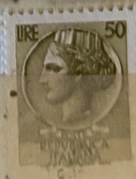
| SOURCE | TITLE| IMAGE MATCH | click to source page |
| Mezzo Secolo di Repubblica | Siracusana – Mezzo Secolo di Repubblica | 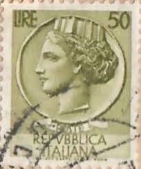 |
| Find Your Stamps Value | Italia” after Syracusean Coin: Italia Type of 1953-54 30l Bister brown stamp price, value | 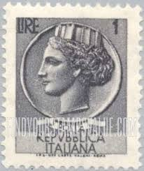 |
| eBay | Poste Repubblica Italiana 50 Lire Postage Stamp Italy Roma Cancelled | eBay | 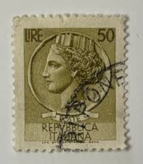 |
| allnumis.com | 50 Lire 1958, 1950-1959 generic - Italy - Stamp - 1681 | 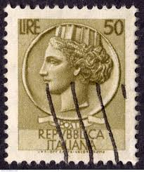 |
| eBay | 100 Lire Siracusana Ruota Dent 12 1/4 Rarita' Cert. Carraro | eBay | 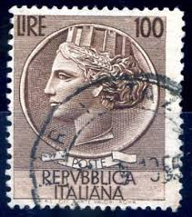 |
| eBay | Italiana 100 Lire for sale | eBay | 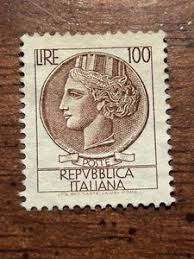 |
| Find Your Stamps Value | Value of poste italiane 50 lire stamps | 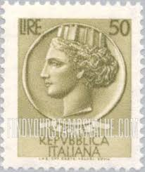 |
| Find Your Stamps Value | Value of ure poste repvbblica italiana 20 stamps | 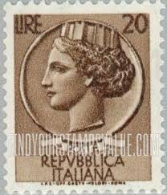 |
| eBay | ITALY Stamp 1968 50 lire- Sc998j Art figure- 4 used R292 | eBay | 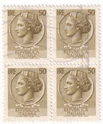 |
| Encyclopaedia Philatelica | The image of the Arethusa nymph that marked the Italian definitive stamps for about thirty years, was taken from a tetradrachm minted in Syracuse at the end of the IV century BCE, | 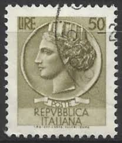 |
| CollectorBazar | Italy Postage 1954 Italia Turrita 50 Lire stamp | 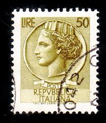 |
| Mystic Stamp Company | 998P - 1968 Italy - Mystic Stamp Company | 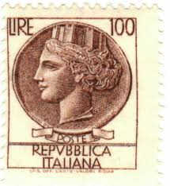 |
| Find Your Stamps Value | Value of 100 lire poste italiane italy stamps | 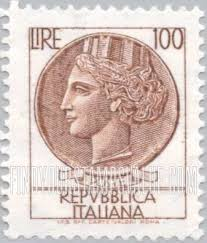 |
| Find Your Stamps Value | Value of republica italiana 200 lire stamps | 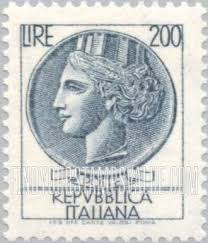 |
| The Philately | 1961 - 1970 Stamps for Sale - The Philately | 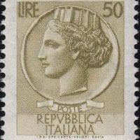 |
| AM PHIL | Stamps Price List - Italian Area - page 19 | 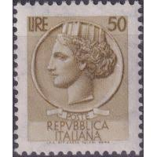 |
| Find Your Stamps Value | Value of 15 lire poste italiane stamps | 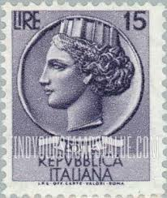 |
| Find Your Stamps Value | Value of Italy 100 lire brown stamps | 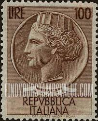 |
| allnumis.com | 180 Lire 1971 - Coin of Syracuse, 1970-1979 Generic - Italy - Stamp - 51929 | 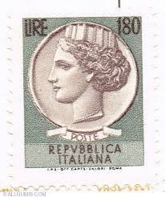 |
| Find Your Stamps Value | Value of italy lire 180 stamps | 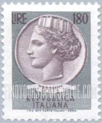 |
| eBay | Brown Handstamped Postage Italian Stamps for sale | eBay | 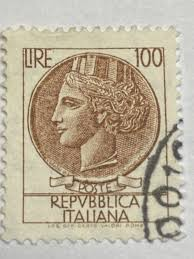 |
| eBay | First Day of Issue Italian Stamps for sale | eBay | 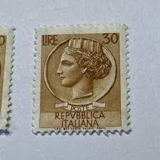 |
| Dreamstime.com | ITALY - June 9,2023 : Old Italian Postage Stamp. Editorial Image - Image of postal, retro: 281550220 | 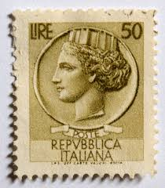 |
| www.greenside-maintenance.com | Lire Valore Valore Poste Italiane Poste Italia, 70 Lire, Francobolli, Año Buy Antique Stamps | 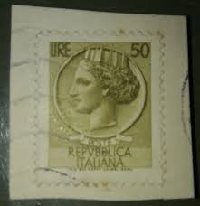 |
| Old-Stamps.com | REPVBBLICA ITALIANA - Repubblica Italiana / Italia 1971 | 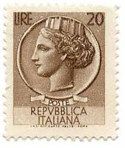 |
| Todocolección | sello poste italiane, il tornio 50 lire, año 19 - Buy Antique stamps of Italy on todocoleccion | 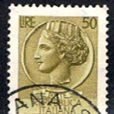 |
| HipStamp | Italy Scott # 998J Used | Europe - Italy, General Issue Stamp / HipStamp | 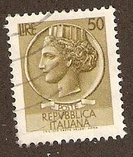 |
| HipStamp | Italy #998O, Used- 1968 - Italy301Dts16 | Europe - Italy, General Issue Stamp / HipStamp | 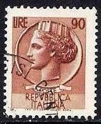 |
| Etsy | Italy Stamp Set Coin of Syracuse 1950's - Etsy | 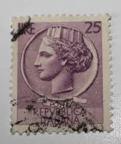 |
| HipStamp | Italia Turrita Lire 50 stelle II 65°D MNH Sass n. 773/I | Europe - Italy, Stamp / HipStamp | 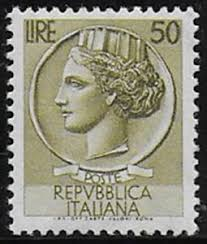 |
| Cherrystone Auctions | U.S. & Worldwide Stamps - October 31-November 1, 2012 - ITALY | 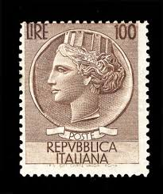 |
| HipStamp | Italy #785 Italia from Syracusean Coin; Used | Europe - Italy, General Issue Stamp / HipStamp | 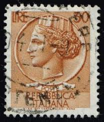 |
| kpolsson.com | Ken P's Coins on Postage Stamps |  |
| Colnect | Italy : Stamps [Year: 1976] [1/6] : Colnect 📮 | 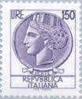 |
| Alamy | Allegory of Italy from coin of Syracuse, postage stamp, Italy, 1953 Stock Photo - Alamy | 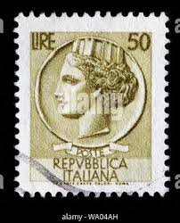 |
| Todocolección | f-ex7558 italy cinderella stamps lot mnh. wwi, - Buy Antique stamps of Italy on todocoleccion | 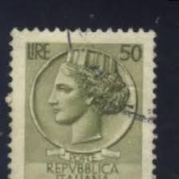 |
| HipStamp | Italy Scott 661-662 MH* 22.5x27.5 mm 1954 stamp set | Europe - Italy, General Issue Stamp / HipStamp | 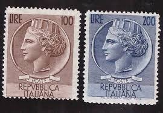 |
| eBay | Brown Royalty Postage European Stamps for sale | eBay | 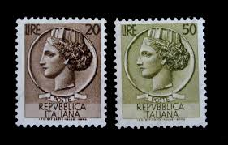 |
| Amazon.com | Italy 920A Watermark Flügelrad unmounted Mint/Never hinged ** MNH 1954 Italia (Stamps for Collectors) : Toys & Games - Amazon.com | 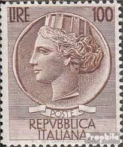 |
| eBay UK | ITALIA ITALY VERY RARE 2 STAMPS 50 LIRA SIRACUSANA. UNC. 3RW 24NOV | eBay UK | 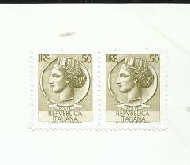 |
| Alamy | Rome 1968 hi-res stock photography and images - Alamy | 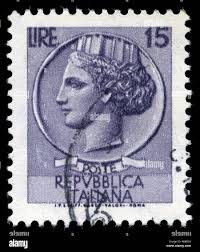 |
| Colnect | Stamp: Coin of Syracuse (Italy(Coin of Syracuse - Wmk. stars I) Mi:IT 1051,Sn:IT 787,Yt:IT 802,Sg:IT 1008,AFA:IT 969,Un:IT 873,Sas:IT 873 📮 | 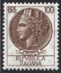 |
| allnumis.com | 15 Lire 1956, 1956 - Italy - Stamp - 39242 | 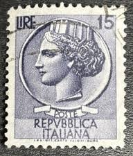 |
| Colnect | Italy : Stamps [Year: 1956] [1/11] : Colnect 📮 | 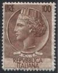 |
| Shutterstock | Greece Circa 1980 Stamp Printed By Stock Photo 109637729 | Shutterstock | 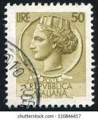 |
| eBay | Mute Brown Stamps for sale | eBay | 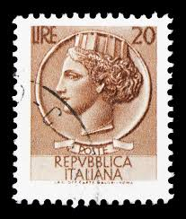 |
| Alfio Arcanà (alfioarcan) – Profile | Pinterest | 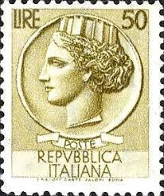 | |
| 123RF | ITALY - CIRCA 1953 A Stamp Printed In Italy Shows Italia Turrita, Series, Circa 1953 Stock Photo, Picture and Royalty Free Image. Image 25489083. | 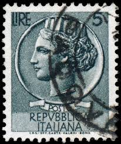 |
| Bob Shop | Italy - Stamps Vatican City 1954 ST.Piox was listed for 350.00 on 22 Feb at 10:46 by cape sales in Cape Town (ID:634742900) | 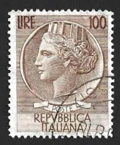 |
| Dreamstime.com | Postage Stamp with the Image of Volleyball. from the Series on 14th Central American and Caribbean Games, Circa 1982 Editorial Photography - Image of sport, correspondence: 392995062 | 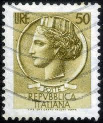 |
| Adobe | Italy postage stamp 20 Lire Turrita serie Stock Photo | Adobe Stock | |
| Dreamstime.com | Syracusean Coin Stock Photos - Free & Royalty-Free Stock Photos from Dreamstime | |
| allnumis.com | 90 Lire - Coin of Syracuse, People - Personalities-woman - Italy - Stamp - 51032 | |
| Corinphila Auktionen | Lot# 4648 - Auction 218-221 - Corinphila Auctions | Stamps | |
| Alamy | Two postage stamp from Italy in the Coin of Syracuse series issued in 1968 Stock Photo - Alamy | |
| What are unique Italian heritage tattoo ideas? | ||
| Shutterstock | 1+ Hundred 50 Lire Royalty-Free Images, Stock Photos & Pictures | Shutterstock | |
| Shutterstock | Italy Circa 1944 Stamp Printed By Stock Photo 104694881 | Shutterstock | |
| FlOsStamp | FlOsStamp |